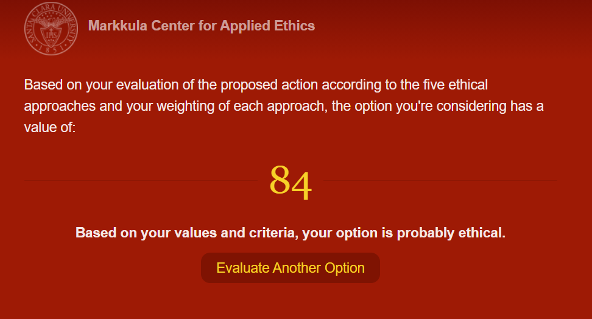

Análisis Malas Prácticas Profesionales sobre ITC
Artículo por Rafael Rojas ObregónLa Ingeniería en Tecnologías Computacionales es una disciplina muy diversa, que interactúa con un gran número de áreas profesionales diferentes, dando soporte a procesos y elaborando la infraestructura subyacente de un sinfín de sistemas y mecanismos presentes en todas las áreas de la vida cotidiana moderna.
Una consecuencia indirecta de esta diversificación es el constante contacto y manejo de los Ingenieros en Tecnologías de la Información con información sensible personal o empresarial, como expedientes clínicos, llaves secretas, etc. así como su resguardo en bases de datos confidenciales.
El área de ciberseguridad es un área compleja y muy presente para cualquier desarrollo tecnológico; ya que es una realidad que los ataques cibernéticos son un problema creciente contra toda clase de sistemas. A diario se registran decenas de miles de diferentes tipos de ataques en todo el mundo, y conforme tu empresa sea de mayor tamaño y maneje una mayor cantidad de información confidencial, aunque sea simplemente las contraseñas de sus usuarios, se deben de desarrollar estrategias para prevenir el filtrado de esta información, y en caso de que ocurra, como prevenir que sean fácilmente leíbles, por medio de un proceso de encripción. Es decir, esta información sensible nunca debe ser resguardada en “texto claro”, sino como caracteres encriptados que impiden su lectura incluso cuando existan vulnerabilidades de seguridad que puedan comprometer al sistema en algún punto dado.
Por más que las empresas sean altamente cuidadosas con prevenir el filtrado de su código fuente y bases de datos; los casos sobran semana con semana de ataques o filtros (leaks) exitosos de información confidencial, como fue el caso a inicios de Octubre de este año (2021) cuando todo el código fuente de Twitch, la plataforma líder de streaming de videojuegos en línea, fue filtrado por un hacker, junto con los salarios de todos los socios trabajando en dicha plataforma.
Aunque es imposible ser invulnerable a ataques maliciosos (hackers, DDoS, etc.); es una responsabilidad ética de los equipos de desarrolladores implementar medidas de seguridad que protejan la información de clientes y asociados resguardados en las plataformas, por más pequeñas que sean, aún cuando dichas medidas conlleven costos, inconvenientes y mayores tiempos de desarrollo. Utilizando la herramienta “Making an Ethical Decision” del Markkula Center for Applied Ethics sobre el caso de la responsabilidad de los ingenieros para aplicar buenas prácticas de protección de datos se encontró lo siguiente:
Nota: La calificación de 84 es el caso de sí aplicar los principios de protección de datos, encriptación, etc. analizados. En el caso de analizar la “mala práctica” de no implementar estas medidas, el score se invertiría a 16, quedando una hipótesis de rechazo de la práctica.
- Utilidad - Acción afecta a un gran número de usuarios de forma beneficiosa, en el largo plazo puede evitar consecuencias financieras importantes.
- Derechos - Se busca el bienestar del otro aplicando estas prácticas.
- Justicia - Se cumplen con regulaciones de protección de datos sensibles.
- Bien Común - La acción beneficia al bien común, es una ventaja para todos los afectados.
- Virtud - La acción propicia valores de responsabilidad, honestidad y profesionalismo.
*Nota: Todos los criterios tienen la misma ponderación de importancia.
Referencia:
- Scullion, C. (2021). The entirety of Twitch has reportedly been leaked. Recuperado de https://www.videogameschronicle.com/news/the-entirety-of-twitch-has-reportedly-been-leaked/